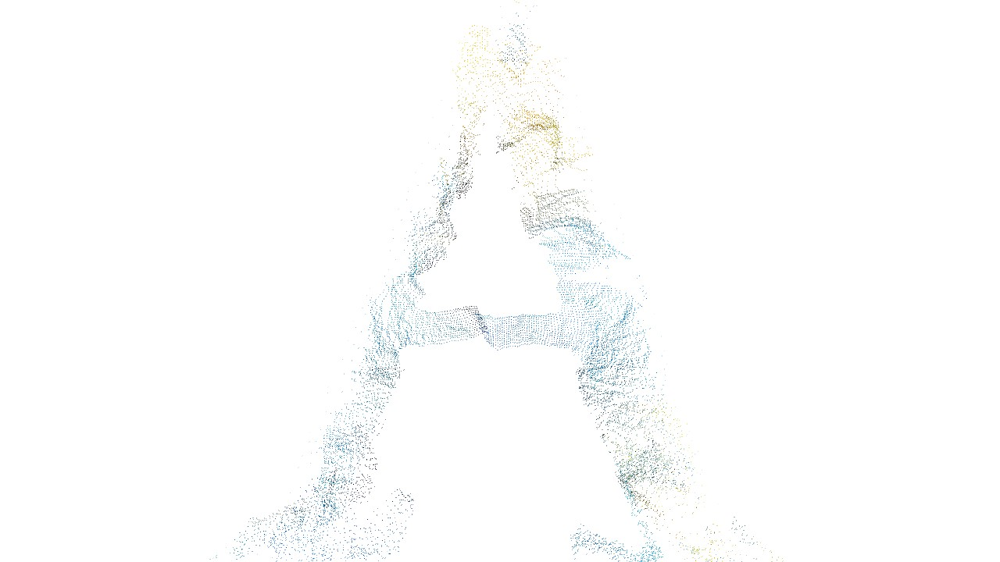
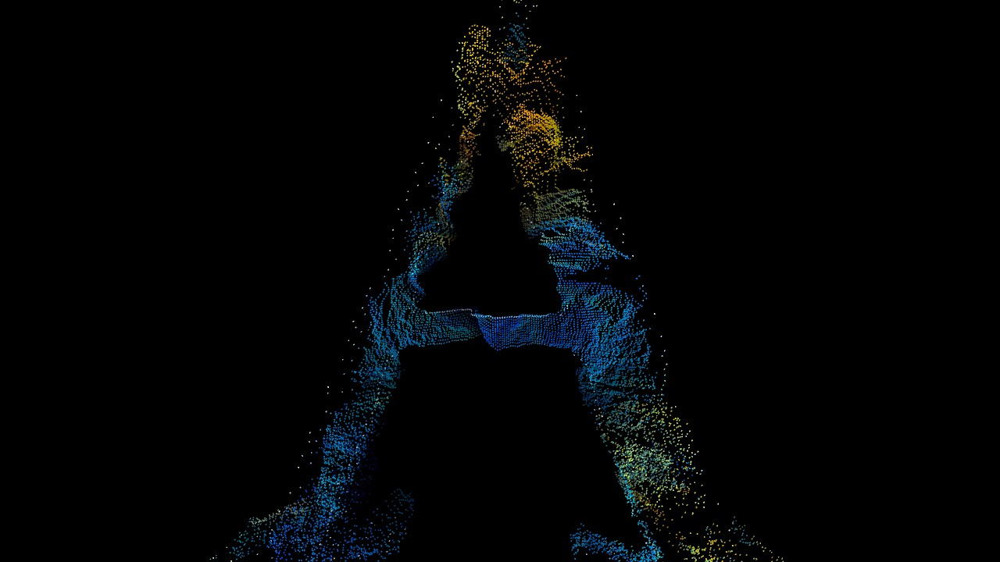
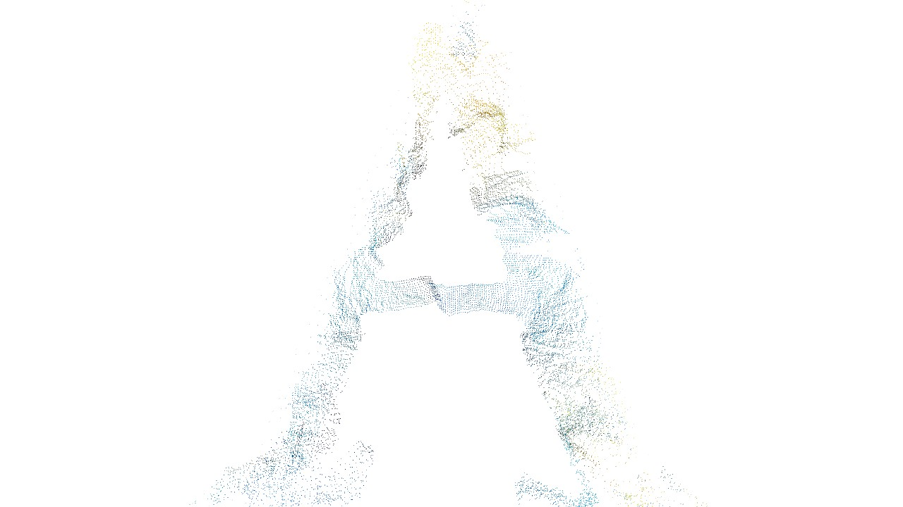
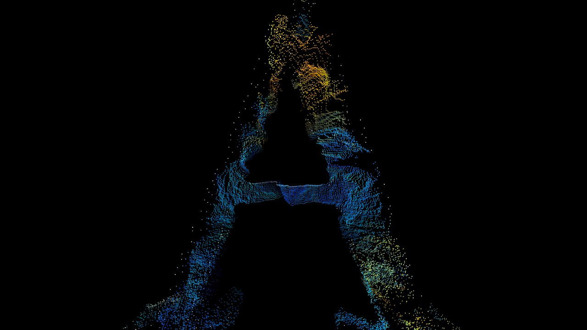
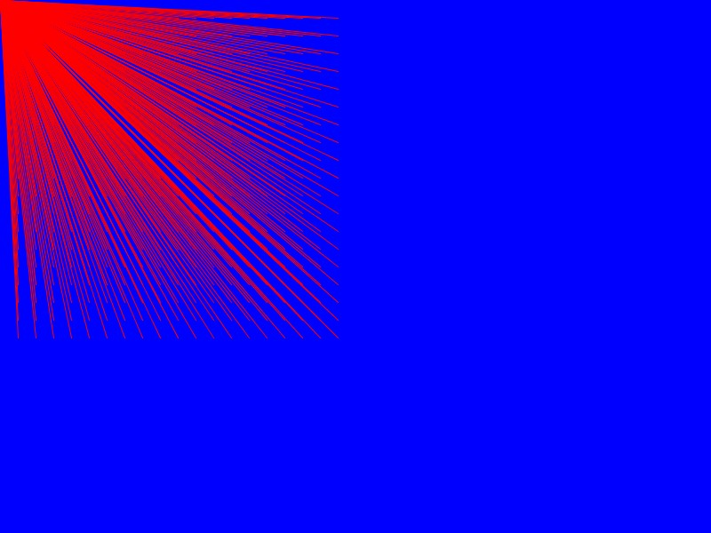
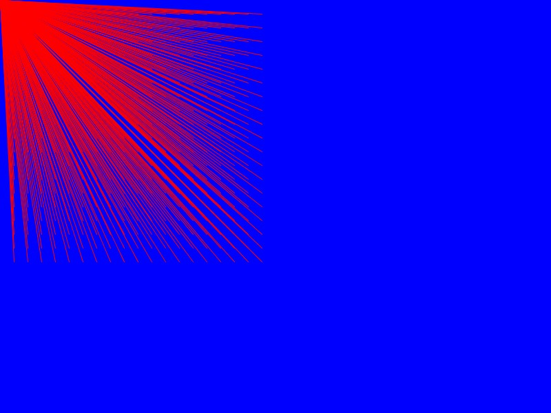
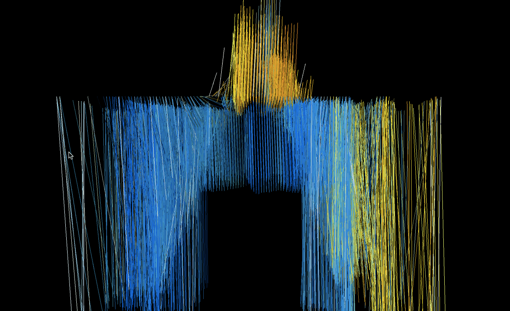
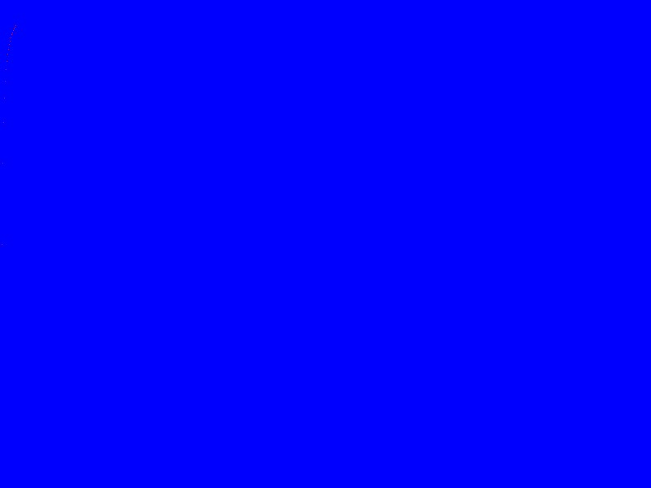
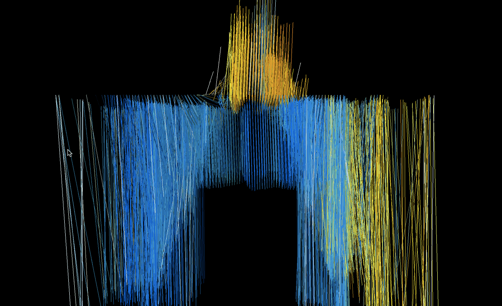
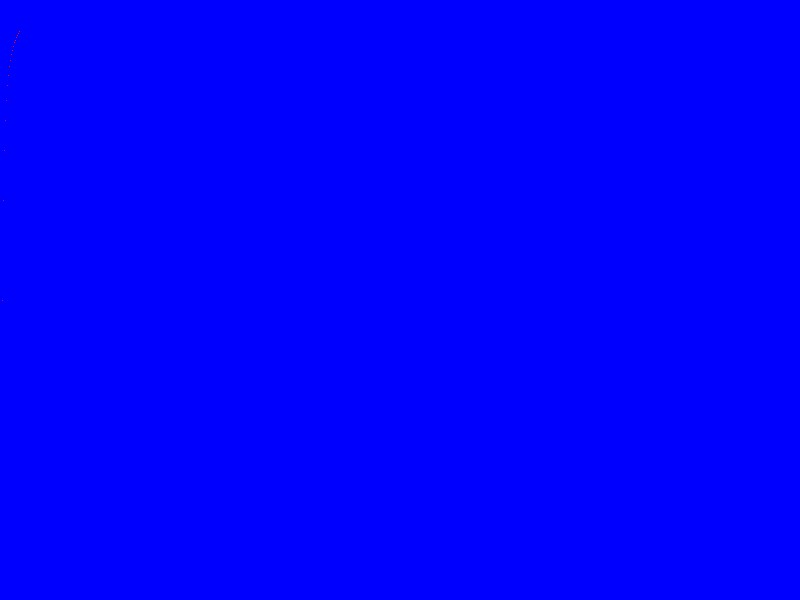

Letter Pixeldestructed
Experiment with Processing. I used an bitmap image of letter an A, which is read by the code and redrawn using point or line values. These values later can be controled with different inputs (mouse position in my case), like sound, pressure or movement.
For depth, 3rd dimension is added and Z-axis value is based in pixel brightness.
 



 

 


